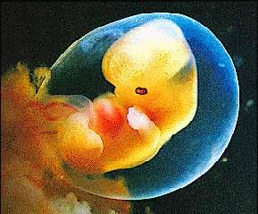
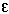
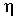

Signs for technical/specialized vocabulary
David Bar-Tzur
Links updated monthly with the help of LinkAlarm.


Embryo1; engineering.
EXPLANATION OF THE GLOSSING SYSTEM
(to understand how I describe the signs in this dictionary).
For content knowledge of how to use the physics terms in context, see Guided tutorial in physics for interpreters.
For negotiating and developing temporary signs, see Preparation and sign negotiation
For vocabulary lists to determine helpful signs for a specific discipline, see Vocabulary lists by topic.
- eagle
- [X dot] taps at nose like a beak. For a video of this sign, "eagle" ASL American Sign Language.
- ear
- ~drum
- EAR F,B^-CL'DH wiggles at eardrum'.
- ~mold
- [F] inserts closed FT into ear.
- three bones (in middle ~)
- 3 BONE JOIN++.
- earphones
- Depending on the size of the earphones, from largest to smallest, (2h)[5:] or (2h)[O^] or (2h)[bO] surround or are inserted into respective ears.
- earrings
- ~ (not pierced)
- (2h)[F] clasp earlobes.
- ~ (pierced)
- (1) (2h)[bO] tap at earlobes or wherever the ears are pierced. (2) (2h)[F] grasp at locations other than the earlobes.
- dangling ~
- (EARRINGS +) (2h)[4], FOs down, dangle at earlobes.
- long ~
- EARRINGS + (2h)[4], POs > signer, FOs up, trace outline.
- easel
- FT of [H] strike mid-palm of [B], FOs of both diagonally up, as if the [H] were the supporting legs for the easel.
- Easter
- (1) (2h)[E], supinate or pronate several times. (2) (1h) version of (1). (3) (2h) [E] arcs > their respective sides. (4) (1h) version of (3). (5) E-EGG. For a QuickTime movie of this sign, see ASL browser - Easter.
- Eastern Catholic
- O-CLEAN.
- Eastern Orthodox
- O-CLEAN.
- eat away at
- [5:] touches FT to palm of [B], PO > DS, FO up, and DH closes and opens as is travels up the palm, as if taking small bites of it, while gnashing the teeth with each bite.
- eccentricity (ellipse)
- CENTER OFF-POINT, where the second sign is [S], PO > NDS, FO away, flicks index finger when it arrives at NDH [1], PO > DS, FO up.
- eccentricity of orbit
- ORBIT HOW-MUCH OFF-POINT COMPARE CIRCLE. ORBIT is [1^], PO down, FO away, circles NDH [A], PO > DS, FO away, from above.
- Ecclesiastes [Heb. Koheles, Kohelet(h)]
- E-C-C-L.
- eclipsing binary system
- (2h)F-CL' hands cross with DH closet then with NDH closer' DOUBLE STAR SYSTEM.
- E coli
- "E" C-O-L-I.
- economics, economy
- [E], PO up, FO away, taps against the palm of NDH [B], PO away, FO away. For a QuickTime movie of this sign, see ASL browser - economy.
- economies of scale
- "E" "S".
- ecstasy (drug)
- (1) X-T-C. (2) "X". (3) TRAIN. (< "riding the e-train.")
- Ecuador
- E-GROUP, that is (2h)[E], POs away touch at thumbs, separate and come together with POs towards and touching on the pinkie side. To see the reference source for the sign(s) for this country or to look up other countries in the same geographical area, see Indigenous signs for countries. To find signs for cities within this country (some have no entries) see Indigenous signs for cities.
- ecumenical
- CHURCH VARIOUS, BRING-TOGETHER-IN-GROUP, where the last sign is (2h)[C], POs ><, FOs away, are brought together. If a religion other than Christianity is meant, substitute RELIGION for CHURCH.
- edema
- BODY WATER GET-FAT'puff cheeks'.
- edge weld
- (2h)[Bb], POs down, FOs away, held at waist level, are slapped together at right angles as if joined and the NDH stays in place while the DH [L] runs up and down the index finger of NDH as if welding it.
- edit
- [V] snips at [Bb], PO down.
- editor
- ~ (machine)
- EDIT MACHINE.
- ~ (person)
- EDIT AGENT.
- education
- (2h)[E], POs ><, FOs up, start by temples and move out, changing to (2h)[D].
- effect(s)
- [O^], PO down, brushes against the back of [B], PO down, while opening into a [5] 2x.
- effective
- SUCCEED.
- effective current (Ieff)
- I E-F-F"subscripted".
- effective interest
- REAL INTEREST, where the latter is [I] rubs little finger side against NDH [I], PO down.
- effeminate
- (2h)[F], FO up, alt. move to and fro at elbows in an effeminate manner with hu.
- efferent
- DH flicks fingertip down the arm, as if a signal were traveling along a nerve down the arm.
- efficient, efficiency
- (1) SKILLED USE. (2) SUCCEED. (3) SKILLED, that is, [B^] grasps [B] on both sides and pulls forward while [B] remains in place. For a QuickTime movie of this sign, see ASL browser - efficient.
- effusion (chemistry)
- NDH [F], PO > DS, FO up, DH [S], PO away, FO up, is held against the "hole" of NDH and moves away while opening to [5] and wg. This show a gas escaping from a small aperture.
- egg (human)
- EGG + (2h)[1] point to the place of the respective ovaries.
- Egypt (مصر)
- (2h)[B] rise to touch FTs at an angle, like the peak of a pyramid. For a film of this sign, click on Egypt (مصر).
- Eichah
- L-A-M.
- einsteinium
- E-S. For more information on this and other elements, see The elements. And for fun, see Elements by Tom Lehrer. To see this song with captions, go to The Elements song by Tom Lehrer.
- EISA configuration utility
- E-C-U.
- ejaculate, ejaculation
- NDH holds index FT against wrist of [S], PO > DS, FO away, with puffed cheeks, then "pow" is mouthed while DH opens to [5] while moving forwards explosively several times.
- ejecta
- [S] strikes back hand of [B], PO down, FO > DS + with NDH still held in place, sign MATERIAL, that is, (2h)[bO], POs up, FOs away, are held in together in place while thumbs rub against FTs.
- El
- GOD.
- elaborate
- ~ (adj)
- 4-COMPLICATED, that is, (2h)[4], POs ><, FOs up, approach each other from their respective sides while wg and pass by each other.
- ~ (v)
- EXPLAIN + [S] is held against [1] like the final position of HIT and the DH backs away while opening to [5:].
- elastic
- ~
- (1) (2h) [S], POs towards, FOs ><, are held in front of chest and stretch apart with effort, For a QuickTime movie of this sign, see ASL browser - elastic. (2) (2h)[X], POs towards, FOs ><, are held in front of chest and stretch apart with effort.
- ~ collision
- COLLIDE, ELASTIC.
- elastic clause (laws that are necessary and proper)
- FLEXIBLE C->L-SENTENCE, that is, [Bb], PO > NDS, FO away, grasps FTs of [B], PO > signer, FO > DS, and wiggles it back and forth, showing its flexibility + (2h)[C], POs><, FOs away, touch FTs, then separate while changing to (2h)[L].
- Elder
- ~ (general)
- ADVANCED AGENT. ADVANCED = (2h)[B^], POs ><, FOs up, move upwards in an arc that veers > signer.
- ~ (Jehovah's Witness)
- (a) OLD~WISE, (b) OLD.
- ~ (LDS [Mormon])
- [E] taps thumbside under NDS clavicle. (< heart or the sign for "missionary"?) A progression of elevations in LDS: Deacon, Teacher, Priest, Elder, High Priest, Seventies, Apostle, and Prophet.
- elect, Elect
- ~ (n)
- PEOPLE GOD CHOOSE/SELECT.
- ~ (v)
- (1)Thumb and index finger of [F] close on something and brings it to [B], PO away, FO up. (2) [G] closes on something and brings it to [B], PO away, FO up. For a QuickTime movie of this sign, see ASL browser - elect.
- election
- (1)VOTE, that is, [F] puts ballot into [C], PO > DS, FO away, with double movement. (2) Thumb and index finger of [F] close on something and brings it to [B], PO away, FO up. (3) [G] closes on something and brings it to [B], PO away, FO up. For a QuickTime movie of this sign, see ASL browser - election.
- elector
- APPOINT + AGENT, where the first sign is PICK but DH slams thumb side against NDH [B}, PO away, FO up.
- electoral college
- APPOINT COLLEGE or GROUP, where the first sign is PICK but DH slams thumb side against NDH [B}, PO away, FO up.
- electrically alterable read only memory
- E-A-P-R-O-M.
- electrically available read only memory
- E-A-R-O-M.
- electrically erasable programmable read only memory
- (1) E-2-P-R-O-M. (2) E-E-P-R-O-M.
- electrically programmable logic device
- E-P-L-D.
- electrical overstress
- E-O-S.
- electric conductivity
- Draw a lowercase sigma (
 ) in the air.
) in the air.
- electric field
- ELECTRICITY INFLUENCE"all".
- electric field intensity
- "E" is shaken underneath [1], PO down, FO > DS, like an E vector.
- electric flux density
- "D" is shaken underneath [1], PO down, FO > DS, like a D vector.
- electric outlet
- ~ (two-prong)
- [V], PO down, moves forwards and interlaces with [1], PO > DS. For a QuickTime movie of this sign, see ASL browser - plug.
- ~ (three-prong)
- [3 with thumb below two fingers], PO away, moves forwards and interlaces with [5], PO towards.
- electric plug
- ~ (for two-prong)
- [V], PO down, moves forwards and interlaces with [1], PO > DS, then NDH taps index finger on DH + RECT-CL. For a QuickTime movie of the first sign, see ASL browser - plug.
- ~ (three-prong)
- [3 with thumb below two fingers], PO away, moves forwards and interlaces with [5], PO towards, then NDH taps index finger on DH + RECT-CL.
- electric potential
- ELECTRICITY POSSIBLE.
- electrocardiogram
- E-C-G.
- electroconvulsive therapy
- E-C-T.
- electrode (Engineering)
- (2h)[X], POs facing, FOs ><, tap FTs together 2x + (2h)[X], POs ><, FOs up, are placed next to one another to represent electrodes.
- electrode (Welding)
- NDH is [1], PO down, FO > DS. DH [B], PO down, FO away, runs palm across the top of the index finger with a slight arc to cover the top half of the surface.
- electrode holder (Welding)
- NDH is [1], PO down, FO > DS. DH [B], PO down, FO away, runs palm across the top of the index finger with a slight arc to cover the top half of the surface + HOLD.
- electroencephalogram, electroencephalograph
- E-E-G.
- electroluminescent
- E-L.
- electrolysis
- E-L-E-C-T-R-O-L-Y-S-I-S.
- electrolyte
- ELECTRIC CHEMICAL.
- electromagnet, elctromagnetic
- ELECTRIC(x1) + MAGNET.
- electromagnetic force
- E-M-F.
- electromagnetic interference
- E-M-I.
- electromagnetic pulse
- E-M-P.
- electromagnetic radiation
- ELECTRIC(x1) MAGNETIC + NDH [S], PO down, FO > DS, DH [5] is held over NDH and wiggles while rising to show radiation.
- electromotive force
- E-M-F.
- electron
- (1) "E". (2) "E" NEGATIVE. (3) "E" PARTICLE.
- electronic
- (2h)[X], POs facing, FOs ><, tap FTs together 2x. For a QuickTime movie of this sign, see ASL browser - electric.
- electronic balance
- ELECTRIC BALANCE.
- electronic data processing
- E-D-P.
- electronic funds transfer
- E-F-T.
- Electronics Industries Association
- E-I-A.
- electronic warfare
- E-W.
- electron neutrino (e)
- Draw a nu in air + E"subscripted".
- electron volt
- E-V.
- electrostatic discharge
- E-S-D.
- electrostatic discharge sensitive
- E-S-D-S.
- electrostatic flux
- Same as the sign PSYCHOLOGY (some people start this sign with THINK, in which case I mean the later half of the compound.)
- electrostatics
- ELECTRICITY STAY.
- electrostatic sensitive device
- E-S-D.
- El Elyon
- GOD + [A dot], PO > NDS, moves from DS upwards
in an outward arc.
- element
- ~ (chemistry)
- E-BASIC. To represent elements and compounds, use a chart of element symbols to abbreviate the names of elements; similarly, use the chemical formula for a compound to abbreviate it, when known. See Abbreviations for the elements. And for fun, listen to Tom Lehrer singing the "Song of the elements" at Flashimation.
- ~ (of a set)
- MEMBER.
- ~ (part of a whole)
- PART.
- ~ of (a set) or ~ in
- Index finger draws a lowercase epsilon ().
- elemental (for example, "~ gallium")
- SINGLE ATOM.
- elementary school
- E-BASIC, PO away.
- elevation
- ~ (architecture)
- ~ (measurement)
- [E], PO away, FO up, is held against [1], PO away, FO up, and DH slides up it.
- ~ (view)
- [E], PO away, FO up, slides across the forearm of [B], PO down, FO > DS.
- ~ (theater)
- ~ (front view)
- DRAW PICTURE FRONT.
- ~ (rear view)
- DRAW PICTURE BEHIND.
- Elevation of the Cross
- TRUE CROSS FIND DAY, where the second sign is [C], PO away, travels down, then returns and moves from NDS to DS, tracing a cross in the air. For an animated gif of this sign, see Animated dictionary of religious signs - Deaf Missions: Cross..
- eligibility
- FT of [F] pull at shirt/blouse several times + CAN+.
- eligible
- FT of [F] pull at shirt/blouse several times.
- Elijah
- [E], PO away, FO up, moves under [B], PO down, FO > DS, and past it.
- eliminate
- ~ (If feces is meant specifically)
- The thumb is pulled out from the bottom of the closed fist. For a QuickTime movie of this sign, see ASL browser - excrement.
- ~ (If sweat is meant specifically)
- FT of [B] move across the forehead, then hand pronates with force to represent wiping sweat off the forehead. For a QuickTime movie of this sign, see ASL browser - perspire.
- ~ (If urine is meant specifically)
- YELLOW + [P] touches middle finger to nose then moves to DS while pronating.
- ~(If any of the above might be included)
- (1) BODY NOT NEED, REMOVE. (2) (2h)[B^], POs up, FOs ><, are held slightly above waist and straighten to (2h)[B] while moving to DS as if flushing things out of body.
- ELISA (enzyme-linked immuno-sorbent assay)
- E-L-I-S-A.
- Eliyahu haNavi
- E-PROPHET.
- ellipse
- 1outline-CL'draw ellipse'.
- ellipse, horizontal
- [1] draws a horizontal ellipse.
- ellipse, vertical
- [1] draws a vertical ellipse.
- elliptical galaxy
- [5:], PO up, FO away, is held above [S], PO down, FO away. DH descend and strikes NDH while closing to [S] + (2h)[C], POs ><, FOs away, hands rush together (GRAVITY GROUP-TOGETHER = GALAXY) + (2h)[C] from before flatten slightly.
- Elohim
- GOD.
- elongation
- (2h)[5], touch FTs and separate while closing to (2h)[O^].
- El Salvador
- (2h)[A], POs down, DHFO > NDS, brushes away from signer 2x with heel of palm on NDHFO > DS. To see the reference source for the sign(s) for this country or to look up other countries in the same geographical area, see Indigenous signs for countries. To find signs for cities within this country (some have no entries) see Indigenous signs for cities.
- El Shaddai
- GOD HAVE ALL POWER.
- Elvis
- An interesting Dutch sign might be useful: [bC] traces his long sideburns. FROM http://www.effathaguyot.nl/index.php?stab=1&signfirst=E (Effatha - Gebarenboek), which is no longer extant.
- e-mail
- ~ (n)
- (1) [E], PO away, FO up, moves forward and opens to a [C]."E" + SEND, that is, [B^] touches top of NDH [B], PO down, FO away and flicks its fingers up. (2) "E" + LETTER where thumb touches thumb. (3) NDH [C], PO > DS, DH [B], PO down, FO slightly toward signer moves so that the FO is away.
- ~ (v)
- (1) SEND, that is, [B^] touches top of NDH [B), PO down, FO away and flicks its fingers up. (2) [S], PO away, FO up, moves forward and down while opening to a [5]. (3) [S], touches NDH [B] and flicks index finger once.
- embezzle
- MONEY + (2h)[5:], POs down, grasp something below and pull it up. For a QuickTime movie of this sign, see ASL browser - embezzle.
- embryo
- E-M-B-R-Y-O.
- emergency department, ED
- E-D.
- emergency room, ER
- E-R.
- eminent domain (powers to take private property)
- PRIVATE PROPERTY, TAKE-AWAY CAN.
- emission nebula
- [S], PO > NDS, FO diagonally away, is held inside of [C], PO up, FO diagonally away, and DH flicks index finger out + CLOUDY, where the second sign is (2h)[O^], NDHPO towards, DHPO away, touch at FTS , then move to opposite sides while opening to (2h)[5].
- emission spectrum
- SPECTRUM SPARSE-spectrum. That is, NDH [5], PO towards, FO up and DH [B], PO > NDS, FO up. DH pivots at wrist and moves back and forth across ND FTs as if they were gradations on the spectrum + with NDH held in place, the [S] flicks index finger three times while moving from thumb to little finger showing that only discrete points are meant.
- emitter
- ~ (transistor)
- "E".
- emitter coupled logic
- E-C-L.
- Emmanuel
- GOD WITH US.
- emotion
- (2h)[E], alt. circle while brushing FT up chest.
- emotional
- (2h)[5:], alt. circle while brushing FT up chest.
- emotional abuse (psychological, mental cruelty)
- PICK-ON"over time + sta".
- emotionally disturbed
- EMOTION PROBLEM HAVE.
- empathy
- FEEL you-SAME-AS-me, where the second sign is (2h)[Y], POs ><, FOs up, hands move back and forth between signer and the person being empathized with.
- empire
- E-KING.
- empirical
- INVOLVE EXPERIMENT.
- employee
- WORK AGENT.
- employer
- (1) HIRE/INVITE AGENT. (2) BOSS.
- employ (hire)
- HIRE.
- employ (a resource)
- USE.
- employee
- WORKER.
- employer
- (1) HIRE AGENT. (2) BOSS.
- employment
- ~ (labor)
- WORK.
- ~ (of a resource)
- USE.
- employment specialist
- (1) WORK MAJOR, where the second sign is [Bb], PO >NDS, travels away along the edge of [Bb], PO > DS, FO away. (2) WORK SPECIAL + AGENT.
- empower
- [C], PO towards muscle, is held above NDS bicep. This [C] is then moved so that the PO is towards whoever is being empowered.
- empty (trash or recycling bin, v, computers)
- (2h)[C] hold garbage can, then turn it over and shake it out.
- (the) empty string
- Draw a lowercase lambda (
 ) in the air.
) in the air.
- emulsion
- [E], PO away, FO up, slides across the forearm of [B], PO down, FO > DS.
- enable
- ALLOW.
- enabled (computers)
- ALLOW FINISH.
- enchant
- (2h)[5], POs down, FOs > signer, FTs flutter and head moves backwards. For a QuickTime movie of this sign, see ASL browser - bewitch.
- enchanted
- [5] points its FT > the signer's face, FT flutter and hand moves away from face with the face following after it and the hand closes to [S], PO > NDS, FO up, with thp.
- encode
- E-CHANGE.
- encoding
- E-CHANGE++.
- encourage
- (2h)[B], POs away, FOs down, hands are held low and circle repeatedly as if pushing something forward.
- encrypt (v)
- TRANSLATE + (2h)[1] cross at midfinger and wiggle as hands move together towards DS.
- encryption
- (2h)[1] cross at midfinger and wiggle as hands move together towards DS.
- enculturate, enculturation
- GROW-UP THAT CULTURE.
- encyclopedia
- [E], PO up, circles while brushing the palm of [B], PO up, FO away.
- end
- ~ (n)
- [B], PO > signer, FO > NDS, brushes twice against FT of [B], PO > signer, FO > DS, while descending.
- ~ (v)
- [B], PO > signer, FO > NDS, moves along edge of [B], PO > signer, FO > DS, and when DH arrives at the FT of NDH, it descends.
- endangered species
- THAT KIND BY-A-HAIR GONE, the last two signs are, BY-A-HAIR: [F] pulls a hair from scalp with a sudden movement, and GONE: [5], PO towards, FO up, descends in front of [B], PO towards, FO > DS, while closing to [O^].
- endemic
- AREA TEND POSS.+
- ending (grammar)
- [B], PO > signer, FO > NDS, brushes twice against FT of [B], PO > signer, FO > DS, while descending.
- endocardium
- (2h)[B], POs down, hands overlap completely at nose, DH on top. DH ascends + INSIDE.
- end of file
- E-O-F.
- end of line
- E-O-L.
- end of tape
- E-O-T.
- end of transmission
- E-O-T.
- endoplasmic reticulum
- E-R.
- endothermic
- HEAN IN++.
- endpoints
- END (2h)alt.INDEX
- energy
- [E] touches thumbside to shoulder and travels in upward arc across bicep, then touches arm with little finger side.
- energy source
- ENERGY, START PLACE. Some people sign START, but that's a verb and "source" is a noun.
- engaged
- ENGAGEMENT (see entry) FINISH INDEX.
- engagement
- [E], PO down, circles and lands on ring finger of NDH [5].
- engage the clutch
- (2h)[B], POs away, FOs up, left hand moves down at an angle as if stepping on the clutch.
- engine
- (2h)[5:], POs towards, interlace FTs and twist at wrists so that the hands travel up and down. For a QuickTime movie of this sign, see ASL browser - engine.
- engineering
- (2h)[Y], POs down, FOs away, touch FTs and twist antisymmetrically while maintaining contact. For a QuickTime movie of this sign, see ASL browser - engineer.
- engineering change order
- E-C-O.
- England
- (1) (2h)[1], POs > signer, but forming right angles so that FTs can point outward diagonally. DH slides its index finger along NDH's index several times. (< the index finger is an "E" in British fingerspelling.) For an animated gif of this sign, see BritishSignLanguage.com. Click on "List of words" - "England." (2) [bC] or [bC dot], PO towards, FO > NDS, strikes chin. (< strap on the fur hat of palace guards.) For a QuickTime movie of this sign, see ASL browser - Great Britain. To see the reference source for the sign(s) for this country or to look up other countries in the same geographical area, see Indigenous signs for countries. To find signs for cities within this country (some have no entries) see Indigenous signs for cities.
- English
- (2h)[B], POs down, FOs away, DH wraps its fingers around NDH from above and shakes it slightly.
- English-based signing
- ENGLISH SET-UP SIGN. SET-UP = [A] twists then stamps the wrist of NDH [S], PO down, with it's small finger side.
- enhanced graphics adapter
- E-G-A.
- enhanced industry standard architecture
- E-I-S-A.
- enhanced small device interface
- E-S-D-I
- enjoy
- Palms of (2h)[B] rub chest in independent circles.
- enlarge
- (1) (2h)[5], PO ><, FO away, separate suddenly in upward arc. (2) (2h)[L:], PO ><, FO away, separate suddenly in upward arc. For a QuickTime movie of this sign, see ASL browser - enlarge.
- enlarger
- (2h)[5], POs ><, FOs away, separate + MACHINE.
- enlightenment, Enlightenment
- ~ (Buddhism)
- (1) The DH has the shape and movement of SURPRISED or WAKE-UP but the hand is held at the center of the forehead. (< the "opening of the third eye") (2) [open 8], PO down, is held over head and twists at wrist while moving upwards. (< BEING~HIGHLY-ABLE.) (3) (2h)[O^], FOs up, are held together against the chest like a closed blossom and the hands open as if a flower were blooming.
- ~ (the historical period)
- THINK CLEAR TIME-PERIOD.
- ensemble
- ACT GROUP.
- enter (use a keyboard)
- (2h)[5], POs down, FOs away, descend while while fluttering.
- enter key
- ENTER K-E-Y.
- entertainment
- (1) PERFORM. (2) ENJOY.
- enthalpy
- "H".
- enthusiasm, enthusiastic
- (2h)[B], POs ><, FOs away, alt, move back and forth while rubbing palms. For an animated gif of this sign, see Animated dictionary of religious signs - Deaf Missions: Zeal.
- entreat, entreaty
- BEG.
- entrepreneur
- E-BUSINESS.
- entropy
- "S".
- entry
- ~ (accounting)
- PUT-DOWN, that is, [O^] touches FTs to [B], PO up, then changes to [B] and touches NDS palm to palm.
- ~ (math)
- ENTER.
- environment
- E-SITUATION. For a QuickTime movie of this sign, see ASL browser - environment.
- enzyme
- E-NEAT.
- enzyme-linked immuno-sorbent assay
- E-L-I-S-A.
- epée
- [A] twists and moves forward as if holding a
sword.
- Ephesians (Πρὸς Ἐφεσίους)
- E-P-H.
- ephphatha
- (2h)[Bb], POs away, are held at ear and suddenly supinated like EAR-OPENED.
- epiclesis
- SUMMON HOLY SPIRIT.
- epidemic
- SICK SPREAD*. For a QuickTime movie of this sign, see ASL browser - epidemic.
- epiglottis
- Run FT of index finger down upper side of throat, then put thumb side of [N] against throat and wg FT.
- epilepsy
- [V], PO down, FO away, is held next to DS of mouth and curls to [V:].
- Epiphany
- (1) [O^], PO > signer, pronates while opening to [5^]. (2) JESUS SHOW DAY.
- Episcopal
- (1) [1] traces the outline of a puffed sleeve from wrist to elbow. For a QuickTime movie of this sign, see ASL browser - Episcopal. (2) [E] traces the outline of a puffed sleeve from wrist to elbow.
- epistle
- (1) LETTER(mail). (2) [E], PO > signer touches mouth and then ND [B], PO up, without pronating.
- epsilon (lowercase, )
- Draw the shape of the letter in the air.
- equal
- (2h)[B^], POs ><, FOs up, tap FT together 2x. For a QuickTime movie of this sign, see ASL browser - equal.
- equal arm balance
- (2h)[B^], POs ><, FOs up, are held side by side and ascend and descend slightly and asymmetrically.
- equality (Math)
- EQUAL (1x) SENTENCE.
- equalizer
- E-Q.
- equation
- ~
- Many people sign E-SENTENCE, but I prefer EQUAL(x1)~SENTENCE, that is, execute the sign EQUAL, but with a single movement and immediately sign SENTENCE from the final position.
- drop out (of an ~)
- GONE.
- equator
- EARTH + (2h)5:-CL'ball' + 1-CL'shows equator line while NDH is held in place'. For a QuickTime movie of this sign, see ASL browser - equator.
- equatorial diameter
- 2h)5:-CL'ball' + 1-CL'shows equator line while NDH is held in place, then show diameter perpendicular to the signer's chest'.
- equilateral
- E-Q-U-I-L-A-T.
- equilibrant
- OPPOSITE, BALANCE.
- equilibrium
- ~
- (2h)[B^], POs ><, FOs up, move alt. up and down slightly.
- static ~
- EQUILIBRIUM STAY.
- equilibrium constant
- "K".
- equipment cage
- (1) (2h)[V], POs > signer, FOs crossing, NDH is held in place while FT of DH tap FT of NDH from behind. (2) DH [V], PO > signer, FO up, taps on backhand of [S], PO > signer, FO > DS + ROOM.
- equity
- "E".
- equivalence, equivalent
- EQUAL is signed on the NDS then moved to the DS and signed again.
- equivalent series resistance
- E-S-R
- -er (suffix)
- ~ (comparative)
- (1) MORE + adjective. (2) [A dot], PO > NDS, FO away, moves upwards slightly.
- ~ (machine)
- Change verb to double motion or add MACHINE.
- ~ (person)
- AGENT.
- erasable (computers)
- Rub palm side of [A] against palm of [B], PO up, FO away + CAN.
- erasable programmable logic device
- E-P-L-D.
- erasable programmable read only memory
- E-P-R-O-M.
- erase
- Rub palm side of [A] against palm of [B], PO up, FO away.
- erbium
- E-R. For more information on this and other elements, see The elements. And for fun, see Elements by Tom Lehrer. To see this song with captions, go to The Elements song by Tom Lehrer.
- erect image
- IMAGE + (2h)[1], NDPO down, touches the bottom knuckle of DPO away, FO up.
- erection (sexual)
- ~ (clitoris)
- (2h)[L], POs towards, but DH holds thumb close to index finger. Index FTs touch and NDH thumb touches base of DH thumb. DH thumb rises like a clitoral erection.
- ~ (nipple)
- (1) (2h)[S] hold backs of hands against nipples and index fingers shoot out. (2) (2h)[T] held against nipples, POs ><, FOs away.
- ~ (penis)
- (1) NDH [1] touches FT to inside joint of elbow of [S], PO > NDS, FO away, and DH rises suddenly. (2) (2h)[1], NDHPO towards, DHPO down, index knuckle of DH is held beneath the FT of DH and DH index finger rises suddenly.
- erg
- E-R-G.
- erode, erosion
- WATER + [5:] touches FT to palm of [B], PO > DS, FO up, and DH closes and opens as is travels up the palm, as if taking small bites of it, while gnashing the teeth with each bite. If the eroding agent is something other than water, replace WATER with its name.
- erogenous zones
- BODY AREA TOUCH, GOOSE-BUMPS, where the last sign is (2h)[S], DHPO > ND arm or away, DH slides along ND arm while opening to [4] and hu.
- errands
- (2h)[D], POs > signer, FOs up, move in a horizontal circle while closing fingers multiple times to (2h)[O^].
- error
- ~ (general)
- MISTAKE, that is, palm of [Y] strikes chin.
- ~ (baseball)
- "E".
- error checking and correction
- E-C-C.
- erupt
- GROW*. For a QuickTime movie of this sign, see ASL browser - erupt.
- erusin
- ENGAGEMENT.
- eruv
- E-GROUP.
- escape velocity
- ESCAPE "V".
- eschatology
- STUDY WHEN JESUS COME "WHAT"? (Gk) "last things." The study of the eventual outcome of the world.3
- Escherichia coli
- "E" C-O-L-I.
- esophagus
- FRONT + F-CL runs down throat to midchest.
- ESP
- (2h)[S], POs down, FOs ><, DH holds back of hand against DS temple and NDH is held opposite it. Both hands flick out index fingers twice directly at each other.
- espionage (Criminal Justice)
- NDH [B], PO > DS, DH [V] peeks around corner of wall. For a QuickTime movie of this sign, see ASL browser - spy.
- espresso
- NDH [S], DH [X], POs ><, FOs away, DH circles on top of NDH as if grinding. (< COFFEE and [X] represents the steam wand.)
- essay
- E-S-S-A-Y.
- -est (suffix, superlative)
- (1) MOST + adjective. (2) [A dot], PO > NDS, FO away, moves upwards in large movement.
- estate
- E-S-T-A-T-E.
- esteem
- (1) PROUD. (2) [O^], PO > NDS, FO up, is held against chest and opens to [C] with thumb still in its original place. (3) Same as (2) but NDH [B], PO down, FO > DS, is held under DH.
- Esther [Heb. Ester]
- (1) E-S-T-H. (2) E-QUEEN.
- estimate
- GUESS. For a QuickTime movie of this sign, see ASL browser - estimate.
- estranged (husband and wife)
- (2h)[1], POs down, FOs away, move forward while separating and altering FOs to sides. For a QuickTime movie of this sign, see ASL browser - estranged.
- eta, 
- Draw the shape of the letter in the air with the index finger.
- eta-c meson (c)
- Draw an eta in the air + [C]"subscripted".
- eta resonance meson ()
- Draw an eta in the air + R-E-S-O-N-A-N-C-E.
- Eternal, the
- ALWAYS + DH produces STILL in the usual way, and the NDH produces STILL so that it moves back over the shoulder.
- eternal life
- LIVE FOREVER.
- eternal light
- LIGHT-SHINE-DOWN CONTINUE++.
- ethanol gycol
- E-G.
- ethical
- FOLLOW ETHICS.
- ethics
- (1) E-T-H-I-C-S. (2) E-LAW, that is, [E], PO away, FO up, touches upper palm of [B], PO > DS, then lower palm.
- Ethiopia
- (1) [E], PO > NDS, starts at forehead and travels back over head. (2) [E], PO > signer, circles forehead. (3) [A dot], PO > NDS, circles face and touches nose with the thumb which is still extended. (< The initial letter of the name in the Geeze alphabet.) To see the reference source for the sign(s) for this country or to look up other countries in the same geographical area, see Indigenous signs for countries. To find signs for cities within this country (some have no entries) see Indigenous signs for cities.
- ethnocentric, ethnocentrism
- POSS. CULTURE + (2h)[B] are held at the side of the respective eye like horse blinders.
- ethnography
- E-T-H-N-O-G-R-A-P-H-Y.
- etiology
- ~ (general)
- (2h)[Bb], POs > opposite side, FOs away, DH is held above and touching NDH and DH moves straight down the NDH + (2h)[S] are held at the chest as if holding a rope and move forward while opening to (2h)[5]. For a QuickTime movie of the second sign, see ASL browser - cause.
- ~ (Health Science)
- DISEASE, WHERE FROM?
- etiquette
- FORMAL.
- eucaryotic
- E-U-C-A-R-Y-O-T-I-C.
- Eucharist
- (1) (HOLY) BREAD. (2) [F], PO > signer, makes the sign of the cross at the mouth. (3) E-CROSS. (4) (2h)[F] is held together at thumbtips and is lifted up. (< the priest lifting the host.) For an animated gif of this sign, see Animated dictionary of religious signs - Deaf Missions: Eucharist.
- Euchre
- E-NUMBER.
- European Space Agency
- E-S-A.
- europium
- E-U. For more information on this and other elements, see The elements. And for fun, see Elements by Tom Lehrer. To see this song with captions, go to The Elements song by Tom Lehrer.
- euthanasia
- (1) PITY, KILL. (2) E-U-T-H-A-N-A-S-I-A.
- evacuate
- ~ (excrete)
- gloss.
- (make a vacuum)
- MAKE V-A-C-U-U-M.
- evaluate
- (2h)[E], POs away, FOs up, alt. rise and fall.
- evangelical, evangelist, evangelism
- (1) E-PREACH. (2) E,V-PREACH(1x). (3) ANNOUNCE.
- evaporate
- (1) (2h)[open 8], PO down, circle antisymmetrically twice, then rise upwards while closing to (2h)[O^], repeat if ongoing. (2) [5], PO down, FO away, touches NDH [B], PO down, FO away from above and DH rises while wiggling DH fingers.
- evaporating dish
- BOWL + with NDH remaining in the final position for BOWL, DH [bC] touches FTs to those of NDH and moves > DS while closing to a [bO] to show the pouring groove.
- evaporator (Automotive)
- DH [5], PO down, FO away, rises up several times from NDH [B], PO down, FO away while wiggling DH fingers.
- Eve (the First Woman)
- [E] touches DS of chin with thumbside 2x.
- even
- ~ (not odd)
- E-V-E-N.
- ~ (function)
- E-V-E-N.
- evening gown
- (FANCY +) (2h)[5] touch thumbs to shoulders and descend deeply and slowly.
- event horizon
- EVENT + [1] traces along dorsal surface of extended forearm, [B], PO down, FO > DS held somewhat high like the earth's horizon.
- everlasting life
- LIVE FOREVER.
- evict
- LANDLORD REJECT, that is, L-L + [8], PO down, is held in palm of NDH and flicks middle finger forward while DH also moves forward slightly.
- evil
- (1)BAD*. (2) DEVIL. (3) E-BAD. (4) SIN. (5) DEVIL DO.
- eucharistic service (Eastern Orthodox)
- (2h)[F] is held together at thumbtips and is lifted up + WORSHIP.
- evaporating gaseous globules
- E-G-G.
- evolution (biology and general)
- (2h)[open 8], DHPO down, NDHPO up, the two hands circle around each other as they move > DS and remain at their respective levels.
- evolutionary track
- E-CHANGE T-R-A-C-K.
- exacerbate
- MAKE WORSE.
- exact
- (1) (2h)[bX], DHPO away, NDPO towards, the union of the index finger and thumb circle that of the other hand and then land direct on it. For a QuickTime movie of this sign, see ASL browser - accurate. (2) Sometimes the word "exact" is differentiated from the word "accurate". Imagine a target where a gun aimed at the bull's-eye consistently hit the bottom of the target: the results would be "exact" in their consistency, but not "accurate". Although the sign we have used for "exact" is often used for "accurate" too, we could use the following sign for "accurate" to make a distinction: (2h)[1], DHPO down, NDPO towards, the FT of the index finger circles that of the other hand and then lands directly on it.
- exaggerate
- (2h)[S], POs ><, FOs up, DH is held in front of NDH and moves away in a jagged line (NDH static) with th.
- exalt, exaltation
- (1) (2h)[5], POs up, are raised high. For an animated gif of this sign, see Animated dictionary of religious signs - Deaf Missions: Exalt. (2) ADVANCED, that is, (2h)[B^], POs ><, FOs up, arc > signer a bit then move up in a definite movement. For an animated gif of this sign, see Animated dictionary of religious signs - Deaf Missions: Exalt.
- exalted
- NAME~SHINY, that is, sign TO-NAME(1x) and without moving the NDH, change the DH to [open 8] and twist at wrist while moving DH up and away.
- examination (physical)
- BODY CHECK.
- excavate
- [B^], FO away, scoops out the ground in front of it.
- exception
- EXCEPT.
- excess (chemistry)
- TOO-MUCH, that is, (2h)[B^], POs ><, FOs up, DH moves upwards with a definite hop.
- exchange
- TRADE.
- (nerve) excitation
- NERVE EXCITED.
- excite (sexually)
- (1) ENCOURAGE EXCITED with appropriate facial expression. (2) ENCOURAGE INSPIRED with appropriate facial expression.
- excited (sexually)
- (1) EXCITED with appropriate facial expression. (2) INSPIRED with appropriate facial expression.
- exclusive-or
- X-O-R.
- exclusivism
- MY BELIEF RIGHT SAY~PERIOD, where the last sign is [bX] touch FT to mouth and then pronates and places a period in (null) space.
- excommunicate, excommunication
- (CHURCH) REJECT.
- excrete
- ~ (If feces is meant specifically)
- The thumb is pulled out from the bottom of the closed fist. For a QuickTime movie of this sign, see ASL browser - excrement.
- ~ (If sweat is meant specifically)
- FT of [B] move across the forehead, then hand pronates with force to represent wiping sweat off the forehead. For a QuickTime movie of this sign, see ASL browser - perspire.
- ~ (If urine is meant specifically)
- YELLOW + [P] touches middle finger to nose then moves to DS while pronating.
- ~ (If any of the above might be included)
- The sign LOSE(-AN-OBJECT) is made close to the body and moves towards the DS, rather than straight down.
- exec (executive, computers)
- E-X-E-C.
- execute
- ~ (computers)
- (2h)[B], NDPO down, DHPO up; DH rubs across ND palm and towards the DS.
- ~ (a document)
- SIGN-NAME START.
- ~ (punishment)
- ORDER KILL.
- executive
- ~ (business)
- (1) E-MEMBER. (2) FT of [5:] touch DS shoulder, then change to [A dot], PO > NDS, FO away, and rises in an outward arc.
- ~ (computers)
- E-X-E-C.
- executive director
- (1) FT of [5:] touch DS shoulder, then change to [A dot], PO > NDS, FO away, and rises in an outward arc + D-CONTROL AGENT. (2) E-X-E-C D-CONTROL AGENT.
- executor
- W-I-L-L CONTROL AGENT.
- exegesis
- (1) INTERPRET. (2) (MEAN) EXPLAIN.
- exercise
- ~ (mental)
- PRACTICE.
- ~ (physical)
- (2h)[S], POs towards, FOs up, lift imaginary weights twice. For a QuickTime movie of this sign, see ASL browser - exercise.
- exert a force
- TRY FORCE.
- exfiltration
- NDH [5], PO > DS, FO away, DH interlaces its fingers with NDH, both at NDS, then DH moves > DS while fluttering FT.
- exhale/inhale
- ~ (through mouth)
- (2h)[O^] thumbs are held at sides of mouth and the fingers spread out to (2h)[5] for exhalation and close again (thumbs always at sides of mouth) for inhalation.
- ~ (through nose)
- (1) (2h)[O^] thumbs are held at nostrils and the fingers spread out to (2h)[5] for exhalation and close again (thumbs always at nostrils) for inhalation. (2) Both hands [5], PO towards body move in and out from chest as if imitating breathing. For a QuickTime movie of this sign, see ASL browser - breath.
- exhaust (engine)
- NDH holds onto wrist of DH [S], which opens suddenly to [5].
- exhibitionism
- (2h)[A] hold coat closed and open it suddenly with evil facial expression and tongue between teeth.
- [there] exists (inverted E, math)
- NDH [1] is placed behind fingers of [W], PO towards, FO > NDS.
- exit (computers)
- E-X-I-T.
- Exodus
- ~ (book of the Bible) [Heb. Sh'mos, Sh'mot(h)]
- E-X-O-D.
- the ~
- (1) EGYPT LEAVE. (2) ESCAPE (2h)5wg-CL'mass exodus'. (3) SAVE (2h)5wg-CL'mass exodus'.
- exorcism
- FORCE BAD SPIRIT OUT-OF-BODY, where the last term is DH [V:] or [O^] is pulled out of a [C] with its FT touching the chest, FO > DS. In the case where [O^] is used, the DH opens to [5^].
- exothermic
- HEAT OUT++. The sign HEAT is not the same as HOT.
- expand, expansion
- ~ (on an idea)
- [S] is held against [1] like the final position of HIT and the DH backs away while opening to [5:].
- ~ (physically)
- ~ (1D)
- (2h)[5], POs ><, FOs away, separate with a sudden movement and pc.
- ~ (2D or 3D)DH [S] is held inside of NDH [C], FOs away. Hands separate while opening into (2h)[5:] and cheeks are puffed out.
- expanded memory manager
- E-M-M.
- expanded memory specification
- E-M-S.
- expectorant
- MEDICINE CAUSE + [S], PO down, FO away, is held at mouth and then moves forward while flicking out index finger onto [B], PO up, FO away.
- expectorate
- [S], PO down, FO away, is held at mouth and then moves forward while flicking out index finger as if spitting.
- expelled
- SCHOOL REJECT, where the second sign is (2h)[B], POs down, FOs away, but hands crossed with DH on top of NDH, DH pronates while scraping against NDH palm as it moves away and off the NDH.
- expenditure
- (1) BUY. (2) DH [O^], PO up, is held in palm of [B], PO up, FO away, and moves forward in upward arc while opening to a [B]. (3) (2h)[S], POs up, are held at pockets, flick out index fingers and move up.
- expense
- E-X-P.
- experiment
- E-SCIENCE.
- experimental (not established)
- EXPERIMENT DECIDE, NOT-YET.
- expert
- (1) SKILLED, that is, [B^] grasps [B] on both sides and pulls forward while [B] remains in place. For a QuickTime movie of this sign, see ASL browser - expert. (2) GOOD-AT, that is, closed FT of [F], PO > signer, FO > NDS, strike chin and stick.
- explanation
- EXPLAIN.
- explicit
- (1) STRAIGHT. (2) CLEAR.
- explode, explosion
- (2h)[S] are held low at chest and crossed at wrists. the hands rise and open to (2h0[5] while showing by mouth and facial expression the act of explosion. For a QuickTime movie of this sign, see ASL browser - explode.
- exponent
- E-X-P.
- exponential (function)
- E-X-P.
- export
- (2h)[O^], POs down, FOs away, are held high and the FTs are brought forward. For a QuickTime movie of this sign, see ASL browser - export.
- expiate
- ~ (Christian)
- (1) [A dot] circles NDH [A], PO down with DH thumb pointing down. (2) REPLACE. (< Jesus taking on people's sins to atone for them.)
- ~ (general)
- (1) AGAIN RELATIONSHIP-WITH-God. (2) SORRY.
- ~ (Jewish)
- [A dot] strikes DS chest 3x. (< the sections of the Yom Kippur service where the chest is struck while confessing sins.)
- export
- (1) SELL (TO) FOREIGN. (2) ASL Browser has a QuickTime movie of a sign for this, but I can't see the difference between this sign and the regular sign SELL, see ASL browser - import.
- expose
- ~ (a person to something physical or experiential)
- [O^] points FT > palm of [1] and opens suddenly. For a QuickTime movie of this sign, see ASL browser - expose.
- ~ (a photographic plate)
- [O^] points FT > palm of [B] and opens suddenly.
- exposure (to illness)
- [O^] points FT > palm of [1] and opens suddenly + HIT* SICK(, DON'T-KNOW). For a QuickTime movie of the first part of this sign phrase, see ASL browser - expose.
- express
- (2h)[S], POs > signer, FOs up, rise up chest and then move forward while opening to (2h)[5:], POs up, FOs away.
- expressed powers (powers directly stated in the constitution)
- POWER, DIRECT EXPRESS.
- expression (part of an equation)
- If the specific expression under discussion is known, describe the expression meant; if not - EQUATION.
- expressionism
- E-X-P-R-E-S-S-I-O-N-I-S-M.
- extended binary coded decimal interchange code
- E-B-C-D-I-C.
- extended graphics array
- X-G-A.
- extended memory specification
- X-M-S.
- extended technology
- X-T.
- extension
- ~ (of a file)
- PERIOD + G-CL show the three "places" where letters are placed (such as ".gif" or ".pdf").
- ~ (of a muscle)
- [S], PO away, FO up, is held with elbow bent and then the fist moves away.
- extent (frequency loss)
- E-X-T-E-N-T.
- external
- OUTSIDE.
- externalities (Economics)
- OUTSIDE INFLUENCE.
- extinct
- GONE, that is, [5], PO towards, FO up, descends in front of [B], PO towards, FO > DS, while closing to [O^]. For a QuickTime movie of this sign, see ASL browser - extinct.
- extol
- PRAISE FOR-FOR? LONG-LIST. The last sign is (2h)[O^], POs > signer, NDH is above and touches DH; both hands open to (2h)[5] while DH descends.
- extract
- (1) (2h)[V] point FTs at the thing one is extracting from and pull towards signer while bending FTs. (2) REMOVE.
- extra high voltage
- E-H-V.
- extrapolate
- FIND VALUE OUTSIDE.
- extrasensory perception
- (2h)[S], POs down, FOs ><, DH holds back of hand against DS temple and NDH is held opposite it. Both hands flick out index fingers twice directly at each other.
- extrasolar planets
- PLANET OUTSIDE OUR SUN SYSTEM, where the first sign is [P], PO down, FO > NDS, orbits around [1], PO > DS, FO up.
- extreme close up
- (1) E-C-U. (2) (2h)[B], POs > signer, FOs ><, NDH is held at waist level and DH rushes very close to it from signer, similar to ARRIVE with zz.
- extremely high frequency
- E-H-F.
- extremely low frequency
- E-L-F.
- extremum
- (<) MAXIMUM OR (>) MINIMUM.
- eye (classifiers)
- Use a rounded 5:-CL for the eyeball and an F-CL for the iris and pupil.
- eye contact
- (2h)[V], POs down, DH faces out directly from eyes.
- eye drops
- [H dot] squeezes rubber tip from above into each eye.
- eyebrow pencil
- [bO], draws an eyebrow on DS, then on NDS.
- eyeliner
- COLOR + (2h)[O^] brush several times under eyebrows while separating.
- eyepiece
- NDH [S], PO > DS, FO up, is held to eye and DH indexes it.
- Ezekiel [Heb. Y'chezkel]
- E-Z-E.
- Ezra [Heb. Ezra]
- E-Z-R-A.
Image credits
1. From http://ee.utah.edu/~bwb6398/baby.html (Baby's home page), which is no longer extant.

Home